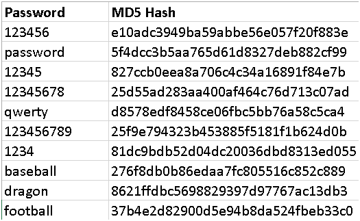

background-image: url(../images/codecamp.png) background-color: #cacaca --- class: center, middle # LC101: Unit 2 ## Hashing --- ## Password Re-use - Most people re-use passwords across multiple sites -- - Hackers that have gained access to password data from one site can use that to try to access your accounts on other sites -- - As a developer of one of those _other_ sites, we can't do much about this -- - We _can_, however, ensure that our site isn't the source of such compromised data -- To see if your email has been part of a data breach, visit https://haveibeenpwned.com/ --- ## Encryption We often talk about data security using the term **encryption**. Encryption is a two-way operation. We apply an algorithm to encrypt a message, and that operation is reversible. -- **Example** ```python encrypt('The crow flies at midnight!', 16) ``` ```nohighlight > 'Jxu shem vbyui qj cytdywxj!' ``` -- ```python encrypt('Jxu shem vbyui qj cytdywxj!', 10) ``` ```nohighlight > 'The crow flies at midnight!' ``` --- ## Downsides of Encryption - Un-encrypting a message requires a **key**. If the key is compromised, all encrypted data becomes exposed. -- - If a message is able to be un-encrypted, then anybody with the key can steal that information --- ## One-Way Hashing An alternative to two-way encryption is **one-way hashing** -- The idea behind hashing is that given a string, an algorithm can produce an output that is difficult to un-encrypt, but is still useful in uniquely determining the intent of the user. -- Hashing is a technique that turns a string into an unintelligible, fixed-length string of characters that is in some sense unique. ```python hashval = hash_func(msg) ``` --- ## Characteristics of a Good Hash Function - Speed: Since they will be used frequently, they should be very fast. -- - Deterministic: Running the hash function multiple times with the same string should always produces the same result. -- - Inversion-resistent: It should be very, very, very difficult (i.e. more-or-less impossible) to find a way to "reverse" the hashing process. -- - Collision-resistent: It should be very, very, very rare that passing two different strings through the hash function will give the same result. --- ## Benefits of Hashing - Site developers can't see or decrypt user passwords -- - It's almost possible to "reverse" the hash, so even if a hacker is able to access an app's database, it is very difficult for them to determine user passwords -- - Hashing still allows for verification --- ## How We Verify Passwords Using Hashes Here's the rough idea: ```python password = request.form['password'] pw_hash = user.pw_hash if pw_hash == hash_func(password): return 'Correct password!' else: return 'Incorrect password :(' ``` --- ## A Naive Hash Function ```python ALPHABET = 'abcdefghijklmnopqrstuvwxyz' def alphabet_position(char): return ALPHABET.index(char.lower()) + 1 def hash(word): positions = [alphabet_position(char) for char in list(word)] return sum(positions) ``` --- ## What's Good About This? - It's fast -- - It's impossible to reverse -- - It's determinisitic (always produces the same result for a given string) --- ## What's Bad? ### Collisions! ```python # returns 86 hash('LaunchCode') ``` -- Common words with the same hash value: national, display, powered, works, lyrics, someone, mortgage, warning, republic, updates, respect, spanish, motion, fantasy, produced, lighting, brother, checkout, query, hunter, bookmark, printed, removal, newest, paragraph, symbol, mysql, relating, challenges, typical, formula, periods, memorial, cartoon, willing, drinking, measured, citizen, waters, pipeline, arthur, insight, terry, tokyo, johnny, recorder, firewall, receives, facilitate, seasonal, anybody, optimal, repairs, commander, weekends, signup, butter, recover, licenses,... --- ## A Hashing Vulnerability The number of good hash functions in use is relatively small. If a hacker steals your data and guesses which hash function you used, they can still figure out user passowrds using a **rainbow table** --  --- ## The Fix: Salts For each password that we hash, we can tack on a random **salt** (a string of random characters) to make it much harder to use this brute-force approach -- Here's the rough idea: ```python password = request.form['password'] salt = get_salt() pw_hash = hash_func(password + salt) ```